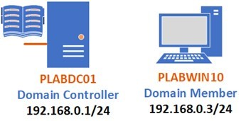

Introduction
bb1840e4-5425-49a3-9d75-477b8f016ff8
Welcome to the Gathering Intelligence on Threat Actors and Vectors Practice Lab. In this module, you will be provided with the instructions and devices needed to develop your hands-on skills.
dc640c20-9434-45ea-b7c2-6d4d6a196bfc
Learning Outcomes
In this module, you will complete the following exercises:
- Exercise 1 - Actors and Threats
- Exercise 2 - Threat Vectors
- Exercise 3 - Threat Intelligence Sources
- Exercise 4 - Research Sources
- Exercise 5 - Threat Map
- Exercise 6 - Vulnerability Databases
After completing this module, you should be able to:
- Use Threat Map
- Use the Common Vulnerability Scoring System (CVSS)
After completing this module, you should have further knowledge of:
- Actors, Their Attributes, and Threats
- Direct Access
- Wireless
- Email
- Supply Chain
- Social Media
- Removable Media
- Cloud
- Open Source Intelligence (OSINT)
- Closed/Proprietary
- Vulnerability Databases
- Public/Private Information Sharing Centers
- Dark Web
- Indicators of Compromise (IoC)
- Automated Indicator Sharing (AIS)
- Predictive Analysis
- File/Code Repositories
- Vendor Websites
- Vulnerability Feeds
- Conferences
- Local Industry Groups
- Social Media
- Threat Feeds
- Adversary Tactics, Techniques, and Procedures (TTP)
- MITRE ATT&CK
Exam Objectives
The following exam objectives are covered in this lab:
1.5 Explain different threat actors, vectors, and intelligence sources.
- Actors and Threats
- Attributes of Actors
- Vectors
- Threat Intelligence Sources
Note: Our main
focus is to cover the practical, hands-on aspects of the exam
objectives. We recommend referring to course material or a search engine
to research theoretical topics in more detail.
Lab Duration
It will take approximately 1 hour to complete this lab.
6cde82b4-969e-4ba2-9a1b-b030a82e21d0
Help and Support
For more information on using Practice Labs, please see our Help and Support page. You can also raise a technical support ticket from this page.
Click Next to view the Lab topology used in this module.
d2c53300-f951-45a9-9aa4-3d4ecae69e11
Lab Topology
During your session, you will have access to the following lab configuration.

Depending on the exercises, you may or may not use all
of the devices, but they are shown here in the layout to get an overall
understanding of the topology of the lab.
- PLABDC01 - Windows Server 2019 (Domain Controller)
- PLABDM01 - Windows Server 2019 (Domain Member Server)
- PLABWIN10 - Windows 10 (Domain Member Workstation)
- PLABKALI - Kali 2019.4 (Stand-alone device)
Click Next to proceed to the first exercise.
<
Home |
README >
CompTIA Security+ Practice Labs
Exercise 1 - Actors and Threats
Threat actors are the entities who are the originators of the threats. Threat actor can be:
- Internal, such as disgruntled employees
- Malicious intruders, such as hackers
- Natural disasters, such as floods
Threat actors can be individuals or groups. These can
range from a script kiddie that uses scripts developed by someone, to
someone who is highly expert in conducting attacks, such as a
nation-state. A script kiddie would be low skilled, but a nation-state
would use highly advanced methods of conducting attacks.
In this exercise, you will learn about threats, actors, and their attributes.
Learning Outcomes
After completing this exercise, you should have further knowledge of:
- Actors, Their Attributes, and Threats
Your Device
This exercise contains supporting materials for Security+.

Actors, Their Attributes, and Threats
There can be different types of threat actors. Each
threat actor can have different attributes, which are their
characteristics, features or methods of attacks. For example, a threat
actor can be characterized as internal or external. An internal threat
actor is someone who is an employee or part of an organization. An
internal threat is also known as an insider threat, which is covered
later in the exercise.
An external threat actor is someone who conducts an
attack from outside the organization. They are characterized to be
dangerous and extremely skillful. Each type of external threat actor has
a level of sophistication and uses different threat vectors that
include processes and tools. It is also important to note that the
threat actors, specifically the external ones, are well-funded and
resourceful. They have either their custom tools or use the tools
borrowed from other hacker groups. For example, the Anonymous group is
one of the big hacktivist groups that use a third-party tool named Low
Orbit Ion Cannon (LOIC) for conducting Distributed
Denial-of-Service (DDoS) attacks.
Advanced Persistent Threat (APT)
In a traditional attack, a hacker gets into the
system, does the damage, and moves out. However, APT attacks are
different. The attacker gains access to the system or network and stays
there for a long time. The security controls fail to detect APT attacks.
Unlike the traditional attack, which may cause damage
to the system or network and get detected in a short period, the APT
attacks quietly keep exfiltrating the data without being detected. The
APT attacks usually do not cause damage and therefore, do not attract
attention. Since there are no noticeable activities within the systems
or the network, these attacks go unnoticed and manage to exist within
the network or system for a long time.
APT attacks have several characteristics that set them apart from traditional threats:
- Well-targeted
- Data focused
- Looks for high-value information
- Un-detectable
- Well organized
- Well-funded
People conducting APTs are highly skilled and use sophisticated methods. They look for valuable information, such as:
- intellectual property (IP) secrets
- design
- critical business information
It is not necessary that the APTs only focus on the
large organization for data. They can also target political parties and
even nations. With the nations, they can target critical
infrastructures, such as the power grid or the nuclear facilities.
The process that ATP follows:
- Define and research targets
- Complete initial intrustions
- Compromise user credentials
- Move laterally
- Keep a low profile and build a stron foothold
- Exfiltrate data
- Cover your tracks
Insider threats
Insider threats are generated by the individuals who
are either the organization's employees or are closely associated with
the organization as a vendor or third-party. It is difficult to detect
insider threats because insiders are virtually difficult to detect as
attackers.
Consider an example where the attacker tried to hack
into your network. There are various security controls, such as a
firewall, blocking access. However, in the insider's case, they do not
have to face the perimeter security or the security controls configured
on the edge of the network. The insiders are already inside the network
and have access to the various resources on the network.
The insiders are usually not seen as a threat to the
organization’s resources. They have legitimate access to the resources
that exist on the network. Several insiders may have more than the
required access, meaning they can access and exploit the weaknesses that
may exist within the network and its resources.
Types of Insiders
There are different types of insiders:
Pure Insider
A pure insider is a person who is part of the
organization and is a legitimate user. The pure insider has permissions
and privileges to the internal network and the resources utilized by the
organization. Hence, they are able to connect to the network and access
the resources in the organization. This gives them the capability to
cause maximum damage.
Insider Associate
An insider associate is someone who is not directly
part of the organization, but he or she is a third-party vendor or a
contractor. The insider associate can also be the security guard or even
a receptionist who can be a contractual resource. They can have limited
access to the network resources or even the facility where your
organization has the office. For example, a security guard may simply
have access to the papers that are left out, unattended on the
employees’ desk. Some of the papers may contain confidential
information. This information can now be passed on to a malicious
entity.
Insider Affiliate
An insider affiliate is someone who can be a spouse,
friend, or acquaintance of an employee. This person can obtain the
information, such as user credentials or a security badge from the
employee and access the network or even the facility.
Outsider Affiliate
Outside affiliates are external entities, which are
not employees or do not have a connection with an employee. The outsider
affiliate can attempt to find entry into the facility or the network
using different methods. It could be through obtaining credentials of an
individual or breaking into a wireless network and gaining access to
the network.
There can be two types of insider threats:
- Intentional
- Unintentional
Intentional
These can be insiders who have access to the internal
network and its resources. They are the entities who have the
opportunity to conduct malicious intent. In some cases, these entities
have access to confidential and restricted information. An example can
be a personal assistant to the organization's CEO, who would have access
to various resources, such as their Email or budgets etc.
If the secretary decided to sell the CEO/company’s
confidential information, or someone simply triggers them to share the
information, then this would be an intentional insider threat.
These insiders could be driven by motivations such as
anger, revenge, ideology, divided loyalty, or even the work that they
are doing. Another motive could be for personal gains, such as monetary.
They may steal the information and sell it to outsiders, for instance
competitors.
In this scenario, if the secretary steals and shares
the information to a malicious entity, the entire set of security
controls within the organization network or on its perimeter network
becomes useless.
Unintentional
Unintentional insiders are the ones who do not have
any malicious intentions but accidentally become a threat to the network
and its resources. It is important to understand that even though it is
unintentional their activities can be malicious, having dire
consequences.
Some of the unintentional activities they may perform are:
- Accidental data deletion
- Accidental data modification
- Incorrect usage of privileges
The consequences of an unintentional act can be as
dangerous as intentional ones. For example, if a healthcare professional
makes incorrect modifications to various patients’ data, it is
considered a serious mistake. The doctor may end up giving the wrong
medication to the patient based on the data shown on the system. This
kind of unintentional attack may occur due to lack of attention, but the
consequences can be detrimental.
State Actors
Nation-states are known for their cyber espionage
against the nations. They are hired by one nations government to conduct
an attack against the government of another nation. These are hackers
who have sophisticated methods and techniques that they use to conduct
the attacks and can target some of the following:
- Government agencies
- Critical infrastructure
- Industries with sensitive data or property
In most cases, the nation-state hackers use custom
tools and target the zero-day vulnerabilities and other vulnerabilities
that have been known but are still present in the application and
operating system. One of the nation-state's key attributes is that they
are highly covert and therefore, most of the attacks conducted by them
rarely come into the news. They, however, are highly focused and have a
set target whom they exploit. Please see the reading list below for
real-life examples of said attacks carried out.
Reading Reference:
Titan Rain
https://en.wikipedia.org/wiki/Titan_Rain
http://content.time.com/time/nation/article/0,8599,1098371,00.html
Stuxnet
https://en.wikipedia.org/wiki/Stuxnet
http://spectrum.ieee.org/telecom/security/the-real-story-of-stuxnet
Estonia
https://en.wikipedia.org/wiki/2007_cyberattacks_on_Estonia
www.wired.com/2007/08/ff-estonia/
Hacktivists
A hacktivist is a hacker who performs hacking for
either a political reason or wants to bring in a social change. A
hacktivist may perform a hacking due to the ideological difference with
the government or a political party. The hacktivist performed the
attacks to gain attention towards their ideology or highlight their
intention of social change. In most basic terms, you can call them the
Internet version of activists.
A hacktivist can also be part of a group that acts as a
team. They often use simple methods of attacks. Distributed Denial of
Service or DDoS or DoS is often a key method of attacking the
government’s Web infrastructure, such as government portals.
Most famous hacktivist groups:
- Anonymous: Known for famous attacks, such as
the Fine Gael website, Operation Tunisia, Operation Egypt, Operation
Syria, Operation DarkNet, AntiSec Leak, and CIA attack.
- LulzSec: Known for famous attacks, such as the Sony data breach and Sony PlayStation Network hack.
Reading Reference:
https://www.trendmicro.com/vinfo/us/security/news/cyber-attacks/hacktivism-101-a-brief-history-of-notable-incidents
Script kiddies
A script kiddie is someone who does not have a
hacker's expertise and relies on ready-made tools to write the code. Due
to a lack of expertise, their attacks are generally not sophisticated.
Criminal syndicates
Criminal syndicates are also known as organized crime
leaders. Organized crime turns out to be one of the biggest threats on
the Internet. Unlike some hackers, who are into hacking for either fun
or causing some level of damage, the organized crime hackers are serious
criminals. They have moved away from the traditional crimes to hacking
in cyberspace. Organized criminals are individuals who are multi-skilled
and have sophisticated methods in conducting their attacks.
The hackers conducting organized crime are no novices
with basic tools in conducting the attacks. Rather, these guys are into
causing serious damage to the organizations, such as:
- Extorting money using ransomware
- Stealing intellectual property
- Stealing industrial secrets and confidential organizational information
They use sophisticated tools, such as:
- Botnets
- Automated exploit kits
Hackers
By default, when you hear the term ‘Hacker’, you think
of a shady person who is usually involved in breaking computers. This
is a popular perception however, this perception of hackers is not
completely true.
A hacker can be good or bad, depending on the tasks
they perform and the intentions he or she has. Broadly, the hackers are
categorized into three different types:
- White Hat Hackers
- Black Hat Hackers
- Grey Hat Hackers
White Hat Hackers: Have deep technical skills
in which they use to prevent the system from breaking rather than
breaking them. This means that they find the flaws in the systems and
help the organization fix these flaws. White Hat Hackers, also known as
Ethical Hackers, are either consultants or on the organization's
payroll. They are responsible for performing penetration testing and
vulnerability assessment. They limit themselves with only finding the
vulnerabilities and flaws but not exploit them. They are supposed to
inform the organization of any vulnerabilities found. One of the key
points about White Hat Hackers is that they perform the tests with the
organization's permissions.
Black Hat Hackers: Just like the White Hat
Hackers, the Black Hat Hackers also have deep technical expertise. They
are not people with good intentions, but they break into the systems for
personal or financial gain. These hackers are breaking and damaging
systems, which could be stealing valuable information, erasing data,
stealing intellectual property and harassing or stalking someone. Black
Hat Hackers do not work with the commercial tools. They would either
write their malware or security tools or use other hackers’ tools. For
example, a hacker may simply rent an exploit kit or purchase a license.
Serenity exploit kit can be purchased. Hacking Tools is another exploit
kit that is easily available on GitHub.
URL: https://github.com/Z4nzu/hackingtool
However, the majority of exploit kits are not
available on the Internet. Their authors or owners have websites on the
Dark Web, and these websites are not indexed on search engines like
Google.
 Figure 1.1 Diagram showing Hacking Tool: Showing various tools included in the Hacking Tool.
Figure 1.1 Diagram showing Hacking Tool: Showing various tools included in the Hacking Tool.
Grey Hat Hackers: Grey Hat Hackers are a
combination of Black and White Hat Hackers. The Black Hat Hacker
qualities consist of breaking into systems without the owner’s
permission. The White Hat Hacker qualities consist of finding the
vulnerabilities and informing the owner. They are usually on the lookout
for some type of monetary reward. If the owner does not pay the reward,
they may sell the vulnerabilities to other hackers or even put them
online.
Shadow IT
Consider a scenario in which your organization has
several strict security controls implemented. Being a developer, you
need to frequently test your applications, which the network does not
allow due to security controls. You set up a small network of multiple
desktops and a switch, and continue with the application testing. The IT
team is unaware of this setup. You have now performed the role of
shadow IT.
Shadow IT works to circumvent or work around the
bottlenecks that they face on the network. As in the given example, you
could not find a way to test your applications and, therefore, set up
your network. So, to circumvent the network's security controls, you set
up your network to test applications. In a way, you have used the IT
resources to beat their security controls.
Competitors
Often competitors of an organization hire hackers to
penetrate its network. For example, organization 1 might pay a hacker to
penetrate the organization 2 networks and steal valuable information.
Alternatively, the competitor organization may also get hold of an
insider to provide confidential information. Assume that there is a
frustrated employee, but he has a good amount of confidential
information. The possibility is that he will approach the competitor to
sell the information, or if the competitor finds out about such an
employee, they might approach him. It is easy to get the information
from an insider rather than hire a hacker who may or may not get the
information you need.
7429868b-128c-4069-95a9-7246a6a9e5a3
<
Home |
README >
CompTIA Security+ Practice Labs
Exercise 2 - Threat Vectors
A threat agent is someone who conducts an attack.
Threat agents can use various methods in an attack. For example, a
threat actor can exploit a vulnerability in an attack. The methods or
techniques used by the threat actor are known as the threat vectors.
A threat actor can use different types of attack
vectors. For example, a threat actor can simply exploit the
vulnerabilities. Another threat actor may use social engineering methods
to get into an organization.
Some of the key examples of threat vector are:
- Unpatched vulnerabilities
- Brute force/cracking
- Distributed denial-of-service (DDoS)
- Domain Shadowing or hijacking
- Credential reuse
In this exercise, you will learn about various threat vectors.
Learning Outcomes
After completing this exercise, you should have further knowledge of:
- Direct Access
- Wireless
- Email
- Supply Chain
- Social Media
- Removable Media
- Cloud
Your Device
This exercise contains supporting materials for Security+.

Direct Access
It is common for the network administrators to expose
the Webservers and other network devices to the Internet. Anyone with
the appropriate permissions can access the systems and devices. When
there is direct access available on the Internet, it also lures hackers
to break into the system. For example, a hacker may simply launch a
distributed denial-of-service (DDoS) attack to bring down the system or
even attempt to break the password. One possible solution is to put the
systems and devices behind Network Access Translation (NAT) to prevent
them from being visible on the Internet.
Wireless
A wireless network is found in almost all
organizations. If not secured properly, a wireless network may simply
become the entry point into a network. For example, an unsecured
wireless hotspots can be easily compromised and then lead the attacker
right into the network.
Email
Everyone uses Emails. There are billions of emails
being sent and received by individuals. A research study by Verizon
concluded that 94% of the malware was delivered by Email. Another
research study by Check Point mentions that 64% of the organizations
have been victims of phishing attacks.
Please see the below example:
Figure
2.1 Screenshot of PLABWIN10: Showing the browser window and simulated
email message. The lower-left corner shows the actual link URL for the
link embedded in the message above.
The above is an example of a malicious email. Attached
to the email is an executable file, when executed by an unsuspecting
user, may result in the installation of malware on the user’s computer.
In the email body, there is also an URL link, closely
examining the link shows that it is not a valid link to the Bank’s
website. When a user unsuspectingly clicks on the link, it will redirect
the user to a fake site where the user might divulge sensitive
information that can be used by the attacker for a further exploit.
For more information, refer to the following URL: https://www.phishingbox.com/resources/phishing-facts
Supply Chain
A supply chain involves several entities, right from
the producer organization, supplier and customer, to the product's
end-user. Several steps are performed in a supply chain. At each step,
it is possible to let some of the steps go unsupervised.
In a real incident in 2008, a supply chain infection
had a major impact on an organization, which had produced digital photo
frames that had been infected with a virus. When a user inserted the USB
drive to copy files onto the digital photo frame, the virus would copy
itself to the USB drive. Later, when the USB drive was attached to a
system, the virus would copy itself. The result was that the
organization had to remove the product from the market.
Another good case in this context is the Android
devices. There have been cases where the Android was infected with
malware inserted into the device during the supply chain process. Such
devices are released in the market, and the end-user does not know that
there is a malware, which may be designed to steal the users
information. If such an infected device connects to the network, the
malware can spread further.
Social Media
Users often put several personal details on their
social media accounts and make it public. For example, you may add your
date of birth, mobile number and the place you live to a social media
site but leave it to be publicly visible. Hackers often scan social
media accounts of their targets to gain more information. For example,
hackers may use this information and gain access to your email and
social media accounts.
In social media, account takeover or several other
types of attacks are possible. Some of the common attacks using social
media information are social engineering, social phishing, and
impersonation.
Refer to the URL for interesting reading:
https://www.bc.net/sites/www.bc.net/files/bcnet/NewsEvents/ConferenceArchives/2017Conference/Presentations/2017Conference-Presentations-SocialThreats.pdf
Removable Media
Users use a removable media, such as a USB drive, to
copy files from one system to another. If the USB drive is infected with
malware, there are high chances that the system to which it is plugged
in will also be infected.
The infection of USB drives is not a new phenomenon.
In the year 2008, USB had become pretty common, and that was the same
year when they were used as an attack vector. Over the years, the USB
drives were continued to be used as an attack vector, but with different
types of malware that caused different types of damages.
Cloud
Just like any other medium, a cloud environment can
also serve as a threat vector. A threat actor can use an unsecured cloud
system and turn it into a bot. There can be cloud malware injection. If
a cloud system is compromised, then it can be used to launch various
types of attacks, such as DDoS. It can also be possible for a threat
actor to use a public cloud to attack an on-premise data center. It is
important to note that cloud systems and applications also have
vulnerabilities. If a threat actor finds the vulnerabilities, then they
can be exploited.
7429868b-128c-4069-95a9-7246a6a9e5a3
<
Home |
README >
CompTIA Security+ Practice Labs
Exercise 3 - Threat Intelligence Sources
To be able to tackle threats, you need to know threat
intelligence sources, which can provide up-to-date information. There is
no single method that can be considered as the ONLY source of threat
intelligence. To be a defender of your network, you need to ensure that
you use various threat intelligence sources together to tackle threats.
In this exercise, you will learn about various threat intelligence sources.
Learning Outcomes
After completing this exercise, you should have further knowledge of:
- Open Source Intelligence (OSINT)
- Closed/Proprietary
- Vulnerability Databases
- Public/Private Information Sharing Centers
- Dark Web
- Indicators of Compromise (IoC)
- Automated Indicator Sharing (AIS)
- Predictive Analysis
- File/Code Repositories
Your Device
This exercise contains supporting materials for Security+.

Open Source Intelligence (OSINT)
Open-source intelligence or OSINT is conducted on the
content or information that is free to use and is in the public domain.
You can find data or information available and use it for various
purposes, such as analysis. In the security domain, open-source
intelligence is about using tools and techniques to find information. It
is important to understand that anything that can be found by the
security professionals; can also be found by hackers or any kind of
threat actor.
Therefore, as a security professional, you should have
a strategy to perform open-source intelligence to find the information
beneficial to any threat actor. You should locate and remove such
information from the public domain.
OSINT is part of the Reconnaissance phase, and it
helps you collect important information from public sources. A threat
actor has a clear plan in mind to find information about an identified
target and can be searched from different sources. However, one of the
key issues with OSINT information is that you, as the threat actor, may
end with a wide variety and quantity of information. This may delay the
process because the more information you find, the more time you spend
filtering and finding the relevant information.
There are different phases in OSINT. These are:
- Source Identification: The threat actor identifies sources from which information can be gathered.
- Data Harvesting: The threat actor collects information from identified sources.
- Data Processing: The threat actor processes and identifies information that can help in enumerating the target.
- Data Analysis: The threat actor performs data analysis of information that was processed in the previous phase.
- Result Delivery: This is the final phase in OSINT in which information about the target is finalized.
Several sources can be targeted in OSINT. Some of the key ones are:
- Social media
- WHOIS repository
- Search engines
Closed Source/Proprietary Intelligence
Closed-source intelligence is the opposite of
open-source intelligence. The closed-source, also known as proprietary
intelligence, is about gathering information from closed sources and is
not generally available in the public domain. Some key personal sources
can include:
- Business information
- Legal data
- Educational records
- Banking information
- Medical records
Most closed intelligence sources are meant to be
confidential or secret and have limited access to selective individuals.
This type of information is considered the most accurate and reliable
as it is validated and stored with limited access.
In most cases, regulations protect such information.
For example, in the case of health information, the Health Insurance
Portability and Accountability Act (HIPAA) in the United States of
America requires the protection of patients’ health records. Anyone
dealing with health records must be regulated under HIPAA. These records
need to be protected as defined within the regulation.
The closed-source or proprietary source information's
key intent is to ensure that its privacy, confidentiality, availability,
and integrity must be protected. Therefore, gaining access to this type
of information, even though it can be difficult, is a prime source of
information that is already validated and accurate.
Some of key company or business closed, or proprietary information is:
- Marketing information may include a competitive position or marketing strategy.
- Manufacturing information that may include future product information, formulas, or the methods to develop the product.
- Financial information may include the cost of manufacturing the product, targets, profits, balance statements, and order pipeline.
- Research and development may include the research information on a specific product that has not been created or is in its inception stage.
There are four key pillars of intelligence/information gathering, and these are known as CART, which stands for:
- Completeness
- Accuracy
- Relevance
- Timeliness
Let’s look at each one of them in detail.
Completeness
The intelligence process or information gathering must
be complete in all senses. It should provide an appropriate level of
detail and gather a level of information that must help conduct a full
attack. As the Security Analyst, you must use this information to find
loopholes and protect the infrastructures by filling said loopholes. To
be able to respond to a threat, you need to have complete information
and sufficient detail. Threat intelligence must provide sufficient
detail to enable a proper response.
Accuracy
Intelligence that is gathered needs to be accurate. If
it is inaccurate, it will lead you to make incorrect decisions that can
severely impact the infrastructure and data integrity. Incomplete
intelligence can also have severe financial and time consuming
consequences. Therefore, reliable sources need to be used.
Relevancy
Intelligence that you gather must address a threat so
that you can protect an asset or target. If you gather information about
the threats that are not relevant to your organization, then such
intelligence is of no use.
Timeliness
The intelligence that you gather must be prompt. If
you are engaging with a target or trying to protect a target, you need
to acquire the information before the attack occurs. Getting the target
information after the attack has occurred will be of no use as the
attack could have been prevented if the information was available
beforehand.
Vulnerability Databases
Vulnerability databases are centralized repositories
that collect, maintain, and update the vulnerability information. When a
vulnerability in any application or device is discovered, it is then
added to the vulnerability databases by its owners. Several
vulnerability databases are available on the Internet. Most of these
vulnerability databases allow you to subscribe to the feeds, providing
an instant indication as to when a vulnerability is added.
Note: Vulnerability feeds are discussed in the next exercise.
For example, mitre.org has a list of vulnerabilities on Windows:
Figure
3.1 Diagram showing a list of vulnerabilities: Showing the list of
vulnerabilities for Windows and Windows-based applications.
When you click on a vulnerability, you can get more
information. For example, on mitre.org, you can view a vulnerability by
simply clicking on it.
 Figure 3.2 Diagram showing a vulnerability: Showing a detailed description of vulnerability on mitre.org.
Figure 3.2 Diagram showing a vulnerability: Showing a detailed description of vulnerability on mitre.org.
Various Websites provide vulnerability feeds. Some of the key ones are listed below:
NIST
URL: https://nvd.nist.gov/vuln/search
Figure 3.4 Diagram showing the NIST portal: Showing the options to search for vulnerabilities on the NIST portal.
Mitre
URL: https://cve.mitre.org/
 Figure 3.5 Diagram showing the Mitre portal: Showing the homepage of the Mitre portal.
Figure 3.5 Diagram showing the Mitre portal: Showing the homepage of the Mitre portal.
CERT
URL: https://www.kb.cert.org/vuls/
 Figure 3.6 Diagram showing the CERT portal: Showing the homepage of the CERT portal.
Figure 3.6 Diagram showing the CERT portal: Showing the homepage of the CERT portal.
VulnDB
URL: https://vulndb.cyberriskanalytics.com/
Figure 3.7 Diagram showing the VulnDB portal: Showing the homepage of the VulnDB portal.
SecurityTracker
URL: https://securitytracker.com/archives/summary/9000.html
Figure 3.9 Diagram showing the SecurityTracker page: Showing the list of vulnerabilities on the SecurityTracker portal.
OVAL
URL: http://oval.mitre.org/
 Figure 3.10 Diagram showing the OVAL portal: Showing the homepage of the OVAL portal.
Figure 3.10 Diagram showing the OVAL portal: Showing the homepage of the OVAL portal.
Public and Private Information Sharing Centers
There are several public and private information sharing centers that can provide information related to security threats.
Information Sharing and Analysis Centers (ISACs)
established entities created for specific industries, and they are
meant for sharing information. They help bridge the gap between the
public and private sectors by sharing the most recent security-related
information. They are meant to protect the critical infrastructure
across different industries, such as Automotive, Health, Information
Technology, Oil, Gas and Space.
These organizations gather threat information about
their domain and then share it with the other organizations in both the
public and private sectors. There are various ISACs across different countries, which are:
- Canada: Global Mining and Metals Information Sharing & Analysis Centre (MM-ISAC)
- Europe: European Energy - Information Sharing & Analysis Centre (EE-ISAC)
- India: National Critical Information Infrastructure Protection Center (NCIIPC)
Let’s look at some of the ISACs across different industries.
Healthcare
Healthcare Ready, which is the ISAC in the
healthcare sector, focuses on strengthening supply chains. It also
focuses on building collaboration between the public and the private
sectors. One of its main agendas is to safeguard the patient's health
data by providing best practices to healthcare organizations. Some of
its key responsibilities are:
- Training and education
- Highlighting the importance of building resiliency into operations and activities that are performed in daily life.
It mainly targets the following:
- Healthcare officials
- Policymakers
- Organizations
- General public
Financial
FS-ISAC focuses on the financial sector. It is a
non-profit corporation that was established by the member organizations
in the financial sector. The key role that FS-ISAC plays is to ensure the following:
- Help the organizations build resilience and continuity of their infrastructure.
- Share threat and vulnerability information with the organizations in the financial sector.
- Helps the organizations in training and building collaboration with the other organizations within the financial sector.
Aviation
The Aviation ISAC is mainly focused on the
aviation industry and helps organizations globally by sharing
information related to cybersecurity. It shares the information with the
organizations on the vulnerabilities, threats, and incidents as and
when they occur from time to time. Some of its key tasks are to:
- Share the threat information as and when threats occur.
- Help in building strategies against threats that occur.
- Help in implementing the best practices in building a secure and resilient infrastructure.
Dark Web
The Dark Web is a part of the Internet that is
underground with several other names, such as DarkNet and Deep Web. What
you see on the Internet is just a small portion, but the other larger
part of the Internet runs in the Dark Web. Many users are using the Dark
Web for illegal activities, hacking, and various other reasons
prohibited by the law.
The security professionals and law enforcement teams
do use the Dark Web to gather threat-related information. There are
forums and Websites, and even E-commerce Websites that sell you material
that is prohibited by law. Forums, in particular, are a keen interest
of the security professionals as they can gather various types of threat
intel from the ongoing discussions.
Indicators of Compromise (IoC)
When an attack occurs, it is difficult to trace the
compromise indicators or the attacker's methods. OpenIoC provides a
method to address this challenge by providing a standardized format. It
helps in defining the standard format for describing artifacts that are
discovered during the investigation. An example of capturing IoC is
shown below:
Figure 3.11 Diagram showing the IoC: Showing the IoC sample for a backdoor created in the OpenIoC application.
IoC can be of various types, and some of these are:
- Unusual network traffic that is either inbound or outbound
- Unusual activities performed by an administrative or privileged user account
- Unusual changes in the operating system or registry
- Unusual connections established from unknown sources
- Unusual DNS modifications and requests
- Untimely system patching
Automated Indicator Sharing (AIS)
Automated Indicator Sharing or AIS is the invention of
the Department of Homeland Security in the United States. The idea
behind AIS is to provide threat indicators in real-time to the federal
government and other organizations. With real-time information sharing, a
threat actor can use a particular threat only once because the
information has been shared with other organizations and federal
departments.
Predictive Analysis
Predictive Analysis is a method in which you can
predict the threats and risks in the future. It sources historical and
other types of data to make predictions of the threats that can occur in
the future. Some various methods and technologies are used in
predictive analysis, which can include:
- Data mining
- Machine Learning
- Artificial Intelligence
- Statistics
These are not the only methods and technologies for
predictive analysis. An organization may use other methods and
technologies depending upon what they are looking for and the
information sources.
File/Code Repositories
It is now common practice to use shared files and code
repositories to share an application’s code between peers for ease of
access. When a user writes code and wants to share it with others, a
code repository, such as GitHub, is used. Developers often copy the
private files or code files into their private repositories, which are
then shared to a public repository to be reviewed by fellow developers.
Anyone can search the public repositories and use the shared
information.
The information collated from public repositories can
be used for attacks. For example, if the threat actor finds a
vulnerability in application code, it can look for the same application
deployed on the Internet. Then, the vulnerability within the application
can be exploited. Various other types of information, such as hostnames
and IP addresses, can be tracked from file and code repositories and
can help the threat actor find more information about its
infrastructure.
7429868b-128c-4069-95a9-7246a6a9e5a3
<
Home |
README >
CompTIA Security+ Practice Labs
Exercise 4 - Research Sources
Information about the threats can come from various
sources. These sources are usually well researched to obtain information
about the threats, bugs, and vulnerabilities.
In this exercise, you will learn about research
resources utilized by a security professional or a threat actor to gain
more information about potential and new threats.
Learning Outcomes
After completing this exercise, you should have further knowledge of:
- Vendor Websites
- Vulnerability Feeds
- Conferences
- Local Industry Groups
- Social Media
- Threat Feeds
- Adversary Tactics, Techniques, and Procedures (TTP)
Your Device
This exercise contains supporting materials for Security+.

Vendor Websites
When a vulnerability is detected, the vendor who
developed the application will disclose it on its website. The details
of the vulnerability and patches or solutions that will help the user
fix the vulnerability will also be available on the vendor’s website.
Consider this example of Microsoft, which is
mentioning the DNS Server vulnerability and the solution to remediate
the vulnerability.
Figure 4.1 Diagram showing the Microsoft Website page: Showing vulnerability and its solution to close it.
Threat actors would typically try to exploit such
vulnerabilities because it is a somewhat known fact that a large number
of administrators would not have fixed or patched the vulnerability.
Vulnerability Feeds
It is a difficult task for an individual or an
organization to keep up with the discovered vulnerabilities. An
individual or the organization would be most concerned with the
vulnerabilities of applications or operating systems that they are
using. However, it is difficult to keep abreast of the vulnerabilities
of even a limited number of applications or operating systems.
For example, let’s assume that a new vulnerability has
been discovered in Windows Server, but you are unaware of it. You have
several Windows Server systems that are exposed to the Internet. In such
a scenario, these systems are likely to be compromised if the
vulnerability is not patched. Therefore, the organizations or even the
individuals should keep up with the vulnerabilities as and when they are
discovered.
Vulnerability feeds are a good method to get the
latest information about the vulnerabilities. Vulnerability feeds are
Simple Syndication (RSS) feeds that deliver the information once you
subscribe to them. When you subscribe to the RSS feeds, you get an
instant indication of a vulnerability when it is added to the database.
Conferences
Several organizations conduct conferences to update
their partners and vendors about the threat intelligence. Some of these
conferences are paid, and others can be free. Consider the following URL
as an example:
https://blog.cybersixgill.com/top-21-cybersecurity-threat-intelligence-events-in-2020
This Website is mentioning the top threat intelligence
conferences around the world. Organizations like SANS conferences
feature on the top of the list. These conferences serve as a great
resource for threat sources.
Academic Journals
Cyber Security professionals will publish
cyber-related academic journals that will contain information on
cybersecurity best practices, cyber resiliency, cybercrime and warfare
and various other cyber-related topics. Many journals may also contain
case studies related to cybersecurity incidents that occurred. These
journals can be published at a regular schedule, mostly quarterly.
Request for Comments (RFC)
Cybersecurity research organizations that publish
cybersecurity-related content, for example, academic journals, will
request that other cybersecurity professionals check and validate the
published material. This is to ensure the validity and integrity of the
content.
Local Industry Groups
Local industry groups, such as a government or private
body, provide the latest cybersecurity information, including threats,
policies, threat adversaries, etc. They own the responsibility of
researching and sharing information with the federal, public and private
organizations. For example, in the United States, the National Security
Agency (NSA) is responsible for providing threat information. They are
also responsible for research in the cybersecurity domain, providing
support to the military and threat intelligence.
Figure 4.2 Diagram showing the NSA Website page: Showing the homepage of NSA Website.
Social Media
Social media is a good research source. You can follow
several industry leaders and their organizations to get the latest
threat intelligence and its related information. For example, Twitter is
a good source of such information, as shown in the exhibit below:
Figure 4.3 Diagram showing the Twitter page: Showing a threat information tweet.
In this exhibit, you are getting information from
reliable sources. There are numerous users and organizations that you
can follow to get first-hand information. Twitter is not the only social
media platform. There are other social media platforms, like Facebook,
that can provide similar information. However, Twitter is widely used
for sharing quick and short information.
Threat Feeds
Threat feeds provide information on the threats and
threat actors. This type of information can be handy and useful for the
Computer Security Incident Response Team (CSIRT), who can update their
data about threats and threat actors. Threat feeds also direct the CSIRT
teams to update their incident management plans.
There are various types of threat feeds available on the Internet. For example, an organization named threatfeeds.io provides threat feeds, which can also be downloaded. Different organizations contribute to their list. For example, AlienVault has added an IP Reputation feed, as shown in the exhibit.
Figure 4.4 Diagram showing the threat feeds page: Showing various threat feeds on threatfeeds.io Website.
Adversary Tactics, Techniques, and Procedures (TTP)
There is a good old saying, “A known devil is better
than an unknown devil.” Each threat actor has a unique style of
operation and uses specific techniques and methods. You should know
these methods, styles, and techniques. Even if the threat actors conduct
their attacks, their methods and techniques fundamentally remain the
same.
For example, Anonymous, a hacktivist group, uses a
traditional DDoS attack using Low Orbit Ion Cannon (LOIC). If your
organization is doing something that Anonymous does not like or support,
they warn you and then conduct a DDoS attack. The majority of their
attacks have been successful against the corporations, such as PayPal,
Visa, and Mastercard.
It is good to know the TTP of a threat actor. If you
also have the indicators, it adds value because you know for sure that
there is an attack coming your way.
7429868b-128c-4069-95a9-7246a6a9e5a3
<
Home |
README >
CompTIA Security+ Practice Labs
Exercise 5 - Threat Map
Threat maps depict the occurrence of threats in
real-time. Several cybersecurity organizations have live threat maps
that are displaying the threat data in real-time. For example,
Checkpoint.com has a threat map that displays a great deal of
information, such as:
- Top targeted countries
- Top targeted industries
- Top malware types
Figure 5.1 Diagram showing the threat map: Showing a live threat map.
The https://threatmap.fortiguard.com displays
the attacks in a slightly different manner. It shows the source
countries shooting either missiles or asteroids at the target country. A
table at the bottom shows the attack, severity, and location.
Figure 5.2 Diagram showing the FORTINET page: Showing a threat map on FORTINET Website.
If still interested in exploring more threat maps, here are some URLs that you can explore:
- SonicWall Live Cyber Attacks Map: https://attackmap.sonicwall.com/live-attack-map/
- Kaspersky Cyber Malware and DDoS Real-Time Map: https://cybermap.kaspersky.com/
- Akamai Real-Time Web Attack Monitor: https://www.akamai.com/us/en/resources/visualizing-akamai/enterprise-threat-monitor.jsp
- LookingGlass Phishing/Malicious URL Map: https://map.lookingglasscyber.com/
- Threat Butt Hacking Attack Map: https://threatbutt.com/map/
- Sophos Threat Tracking Map: https://www.sophos.com/en-us/threat-center/threat-monitoring/threatdashboard.aspx
- FireEye Cyber Threat Map: https://www.fireeye.com/cyber-map/threat-map.html
In this exercise, you will learn about the threat map.
Learning Outcomes
After completing this exercise, you should be able to:
Your Devices
You will be using the following devices in this lab. Please power these on now.
- PLABDC01 - Windows Server 2019 (Domain Controller)
- PLABWIN10 - Windows 10 (Domain Member Workstation)

Task 1 - Use Threat Map
Using a threat map, you can determine where the attacks originate and which countries are being targeted.
In this task, you will use a live threat map. To do this, perform the following steps:
Step 1
Ensure that you have powered on the required devices and connect to PLABWIN10.
The desktop is displayed.
Figure 5.3 Screenshot of PLABWIN10: Showing the desktop of PLABWIN10.
Step 2
Click the Microsoft Edge icon in the taskbar.
Figure 5.4 Screenshot of PLABWIN10: Clicking the Microsoft Edge icon in the taskbar.
Step 3
In the address bar of Microsoft Edge, type the following URL:
https://threatmap.checkpoint.com
Press Enter.
Figure 5.5 Screenshot of PLABWIN10: Entering the URL of a threat map in the address bar; https://threatmap.checkpoint.com.
Step 4
Notice that the world map is displayed with some
curved lines. When you view the map, you will notice that the lines
start from a specific country and connect with another country. The
point from where they are originating in the location from where the
threat is originating. For example, in the given map, the originating
threat point is Poland, and the target country is India.
Note: This is a real-time map, and therefore, the depiction of the lines in your lab environment will be different.
 Figure
5.6 Screenshot of PLABWIN10: Showing the real-time threat-map showing
lines indicating attacks going from Poland to India.
Figure
5.6 Screenshot of PLABWIN10: Showing the real-time threat-map showing
lines indicating attacks going from Poland to India.
Step 5
Wait for a few seconds and then check the threat map. Notice that the target countries have changed.
Figure
5.7 Screenshot of PLABWIN10: Showing the continuous updates on the
threat map, the lines are depicting attacks from the US to both
Argentina and Norway.
Step 6
Notice that at present, the right and the left panes
are not visible. This is because the size of the window is smaller than
the Webpage layout.
In the Microsoft Edge window, click Settings and more and then click - icon next to Zoom.
Figure 5.8 Screenshot of PLABWIN10: The options button is selected in the Edge browser with the zoom out button selected.
Step 7
You need to reduce the zoom size to 67% and click anywhere on the screen.
Figure 5.9 Screenshot of PLABWIN10: Setting the zoom size to 67% in the Web browser settings.
Step 8
Notice that the right and left panes are now visible.
The left pane is real-time. It keeps getting updated multiple times in a
second. These are the types of attacks, such as malware, phishing, or
exploit.
The right pane displays the following:
- Top targeted countries
- Top targeted industries
- Top malware types
Note: The targeted countries, industries and top malware types may be different in your lab environment.
Figure 5.10 Screenshot of PLABWIN10: Showing the left and the right pane.
Step 9
In the right pane, click the first country that you see under the TOP TARGETED COUNTRIES section.
Figure 5.11 Screenshot of PLABWIN10: Clicking the first country under the TOP TARGETED COUNTRIES in the right pane.
Step 10
The <Country_Name> dialog box is displayed. Notice the types of attacks being conducted in this country.
Figure 5.12 Screenshot of PLABWIN10: Showing the details of the targeted attack on the selected country.
a5adbee1-b3d4-422f-907b-2999d763f275
You can close this dialog box and the Microsoft Edge window.
<
Home |
README >
CompTIA Security+ Practice Labs
Exercise 6 - Vulnerability Databases
It is true that all software - application software
and infrastructure or system software (and sometimes hardware) - has
vulnerabilities. Some vulnerabilities have not been discovered yet, and
others are fairly well-known. There are many sources of threat
intelligence available across the Internet.
Many vulnerabilities are published in an online,
searchable database, called the National Vulnerability Database. It is
easily accessible and is maintained by the National Institute of
Standards and Technology (NIST), which is part of the United States
Department of Commerce. This database is much more than a list; it
includes a complex scoring and evaluation system, and details on
thousands of known vulnerabilities.
NIST defines vulnerability as "a weakness in the
computational logic (e.g., code) found in software and hardware
components that, when exploited, results in a negative impact on
confidentiality, integrity, or availability.” The information
provided for each vulnerability in the NIST database is very specific to
the Software or hardware component and version, and often fairly
technical in its explanation.
The acronym CVE (Common Vulnerabilities and Exposures)
is also used to describe vulnerabilities in this database. As
additional research sources, more information, including workarounds and
permanent solutions for specific vulnerabilities, may be found on
software vendors’ websites.
Learning Outcomes
After completing this exercise, you should be able to:
- Use the Common Vulnerability Scoring System (CVSS)
After completing this exercise, you should have further knowledge of:
Your Devices
You will be using the following devices in this lab. Please power these on now.
- PLABDC01 - Windows Server 2019 (Domain Controller)
- PLABWIN10 - Windows 10 (Domain Member Workstation)

Task 1 - Use the Common Vulnerability Scoring System (CVSS)
When you find several vulnerabilities within your
infrastructure, you would probably not know how to rank them or assign
scores to them. CVSS helps you assign a score to each of the
vulnerabilities. For example, you may have a vulnerability that risks
your data's confidentiality, integrity, and availability. Using CVSS,
you can determine the score.
The scores are calculated based on several metrics.
Once you define these metrics, you would be able to determine the CVSS
score of a vulnerability. For example, a score of 10 to a vulnerability
would make it severe. You can also use CVSS calculators that can help
you calculate the scores.
To be able to determine the CVSS score, perform the following steps:
Step 1
Ensure that the required devices are powered on and connect to PLABWIN10.
Click the Microsoft Edge icon.
Figure 6.1 Screenshot of PLABWIN10: Clicking the Microsoft Edge icon in the left pane.
Step 2
In the address bar of Microsoft Edge, type the following URL:
https://www.first.org/cvss/calculator/3.0
Press Enter.
Figure 6.2 Screenshot of PLABWIN10: Entering the URL in the Microsoft Edge Web browser's address bar.
Step 3
The Common Vulnerability Scoring System Version 3.0 Calculator page is displayed.
In the Base Score section, select the following metrics:
Attack vector
Network (N)
Attack Complexity (AC)
High (H)
Privileges Required (PR)
Low (L)
User Interaction (UI)
None (N)
Scope (S)
Unchanged (U)
Confidentiality (C)
High (H)
Integrity (I)
High (H)
Availability (A)
High (H)
Notice that the score is automatically calculated to 7.5, which is considered to be High.
Figure 6.3 Screenshot of PLABWIN10: Showing the rating in the CVSS calculator.
Note: It would be good to spend some time on this page and try different combinations of threats.
Step 4
Let’s change the following values:
Confidentiality (C)
Low (L)
Integrity (I)
Low (L)
Availability (A)
Low (L)
Notice that the score is automatically calculated to 5.0, which is considered to be Medium.
Figure 6.4 Screenshot of PLABWIN10: Showing the new rating in the CVSS calculator to be 5.0 (Medium).
a5adbee1-b3d4-422f-907b-2999d763f275
MITRE ATT&CK
MITRE ATT&CK is a knowledge base that
provides the information on the adversary methods they have collected
from real-world incidents. It is an open database that can be used by an
individual or an organization. The information that it provides can be
used without any charges.
It contains the information that anyone can use to
develop their threat models. The MITRE ATT&CK knowledge base is
widely used across different sectors, such as:
- Public
- Private
- Government
The organizations developing security products also
use this knowledge base to integrate the required information into their
products. You can view the database on the following URL:
https://attack.mitre.org/
A snapshot of the database is given below:
Figure 6.5 Diagram showing the MITRE ATT&CK database: Showing various threats in the MITRE ATT&CK database
MITRE gives you lots of information about the different tactics and techniques used by the attackers.
Figure 6.6 Diagram showing the MITRE ATT&CK page: Showing various tools and techniques used by various threat actors.
It also provides mitigation methods for enterprises and mobile. The following exhibit provides information for mobile security.
Figure 6.7 Diagram showing the MITRE ATT&CK page: Showing various mobile mitigations on MITRE ATT&CK Website.
You can also find information on software that is used in the attacks. An example of AndroRAT is
given below. There is a dedicated Webpage for each software where MITRE
provides information about the tool and its techniques.
Figure 6.8 Diagram showing the MITRE ATT&CK page: Showing the AndroRAT malware's details on the MITRE ATT&CK Website.
d31298f5-3011-4089-bf06-fbf08c44a7f9
Keep all devices that you have powered on in their current state and proceed to the review section.
Review
Well done, you have completed the Gathering Information on Threat Actors and Vectors Practice Lab.
c6e74811-6d1f-4779-94c2-34fcca239022
96066396-4a1b-4e57-b1b0-51a67b23eddf
9b646a09-b835-4cf5-a3c9-70735d98a0b1
f535d57a-888e-4f0e-b4c9-b064116eedae
2b5c12fe-50d0-4da3-8621-3e8476c99e85
95ce23b2-3598-4c6f-89e8-c949df184c7c
aaaaaaaa-1111-1111-1111-193f35a24fe3
Summary
You completed the following exercises:
- Exercise 1 - Actors and Threats
- Exercise 2 - Threat Vectors
- Exercise 3 - Threat Intelligence Sources
- Exercise 4 - Research Sources
- Exercise 5 - Threat Map
- Exercise 6 - Vulnerability Databases
You should now be able to:
- Use Threat Map
- Use the Common Vulnerability Scoring System (CVSS)
You should now have further knowledge of:
- Actors, Their Attributes, and Threats
- Direct Access
- Wireless
- Email
- Supply Chain
- Social Media
- Removable Media
- Cloud
- Open Source Intelligence (OSINT)
- Closed/Proprietary
- Vulnerability Databases
- Public/Private Information Sharing Centers
- Dark Web
- Indicators of Compromise (IoC)
- Automated Indicator Sharing (AIS)
- Predictive Analysis
- File/Code Repositories
- Vendor Websites
- Vulnerability Feeds
- Conferences
- Local Industry Groups
- Social Media
- Threat Feeds
- Adversary Tactics, Techniques, and Procedures (TTP)
- MITRE ATT&CK
Feedback
067744a4-4299-4662-b5be-04dbb636a007
Shutdown all virtual machines used in this lab. Alternatively, you can log out of the lab platform.